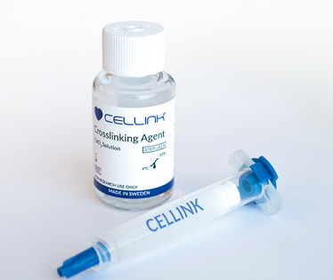

BIOIMPRESORA 3D

Las impresoras 3D y las bioimpresoras 3D son similares entre sí, pero las impresoras 3D están diseñadas para imprimir materiales sólidos, mientras que las bioimpresoras 3D están diseñadas para imprimir líquidos o geles. Las bioimpresoras 3D también están diseñadas para manejar materiales sensibles que contienen células vivas, sin crear demasiado daño en el resultado final. Las bioimpresoras pueden ser basadas en inyección de tinta, asistidas por láser o basadas en extrusión. Cada tipo de impresora tiene sus pros y sus contras en cuanto a costos, viabilidad celular, densidad celular, resolución, entre otros. La compatibilidad de las bioimpresoras con las bio- tintas también varía, y por lo tanto es importante asegurarse de que la bioimpresora y la bio-tinta funcionen bien juntas.
Principalmente, la bioimpresión 3D puede utilizarse para varias aplicaciones biológicas en los campos de la ingeniería de tejidos, la bioingeniería y la ciencia de materiales. La tecnología también se utiliza cada vez más para el desarrollo farmacéutico y la validación de medicamentos. Entornos clínicos como los injertos de piel y hueso impresos en 3D, implantes e incluso órganos impresos en 3D completos están actualmente en el centro de la investigación en bioimpresión.
BIOTINTA

Una bio-tinta es cualquier polímero natural o sintético que ha sido seleccionado por sus componentes biocompatibles y propiedades reológicas favorables. Una bio-tinta típicamente soportará células vivas, y sus características ayudan a la adherencia celular, la proliferación celular y la diferenciación celular durante la maduración.
Las formulaciones específicas de bio-tintas suelen estar dictadas por el tipo de célula con el que se pretende utilizar. Esto se debe a las necesidades únicas de diferentes tipos de células, incluyendo los nutrientes necesarios, factores de crecimiento y características físicas que permiten que las células prosperen y funcionen. El objetivo de una bio-tinta no solo es mantener la viabilidad celular, sino también promover la formación de matrices extracelulares (MEC) específicas del tejido.
BIOREACTOR